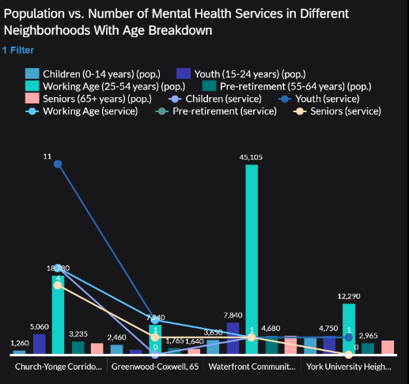
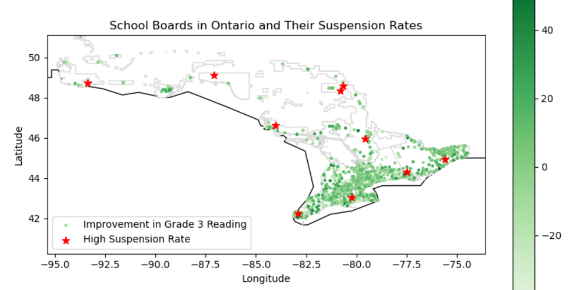
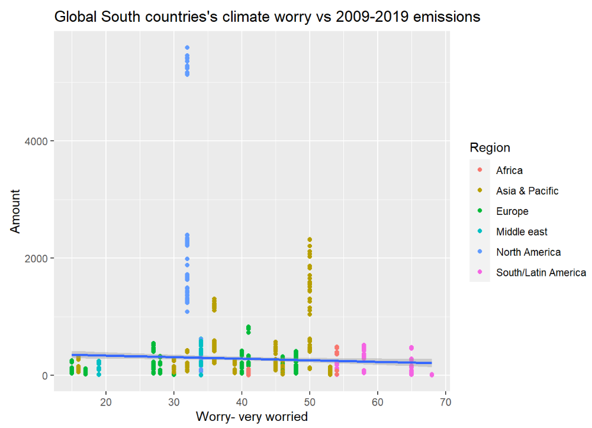
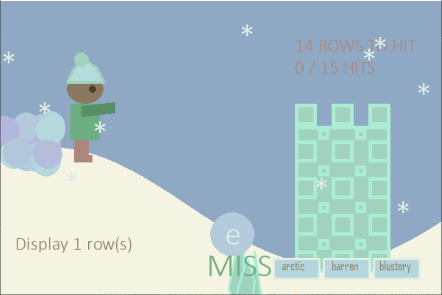
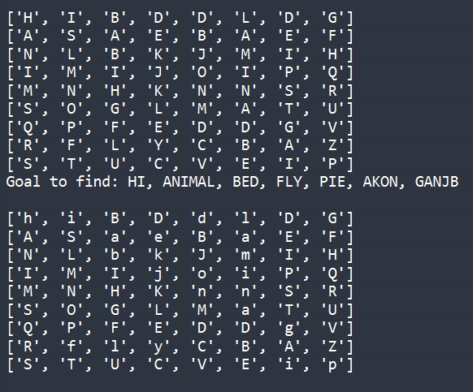
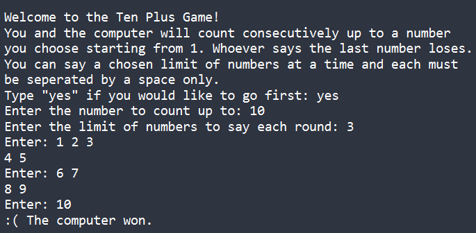
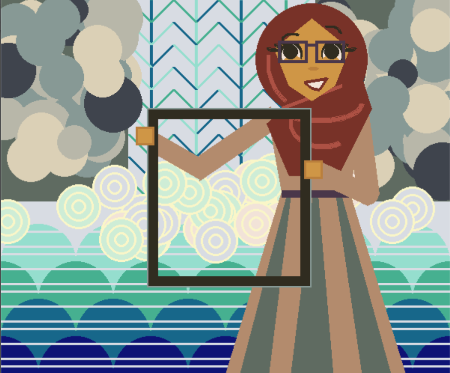
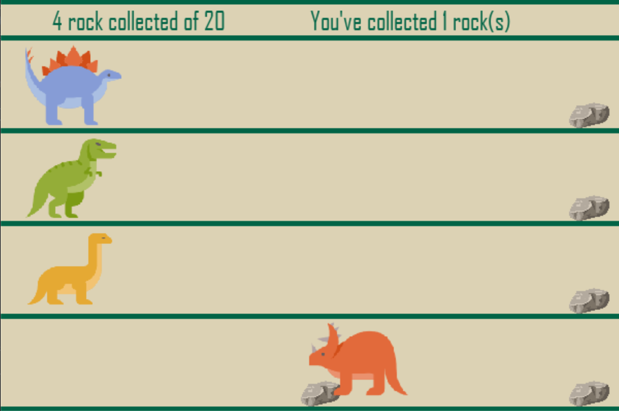

Mental Health Clinic Data Analysis
Extended other co-op students' findings in researching about Toronto's mental health.
Year Started: 2021
Language: Python
- Tidied and manipulated data using Jupyter Notebook and Pandas
- Used SAP Analytics Cloud to create interactive visualizations
- Discovered discrepancy between neighbourhood location and demographics

EQAO vs Suspension Rate Data Analysis
Analyzed EQAO scores and suspension rates in Ontario for the 2019-2020 school year to look for a correlation.
Year Started: 2024
Language: Python
- Used Pandas for Data preparation and Matplotlib to create four total plots
- Created complex visualizations including a labeled map using geopandas and a correlation matrix using seagram
- Found that schools with a higher percentage of students attaining the standard (especially in reading) had lower suspension rates, but that there are other significant factors as well
- Highlighted that current academic improvement efforts do not significantly impact suspension rates, calling for more effective strategies such as tailored education

Climate Change Data Analysis
Worked in a team of 6 to analyze the relationship between climate indicators and various factors, using Tidyverse and various datasets: Climate Survey Data, Emissions, Ice Rate of Change, Biofuel, and Primary Energy.
Year Started: 2022
Language: R
- Wrote a professional report using R Markdown with a table of contents leading to different sections of the analysis
- Tidied Data through dplyr functions and a handwritten function for the survey data which was mapped to all survey datasets
- Created 22 total visualizations using ggplot
- Discovered that significant regional differences exist in climate concerns and emissions, with some nations like those in the EU drastically reducing greenhouse gas emissions and increasing renewable energy usage, while others with rapidly expanding economies heavily rely on fossil fuels, leading to increased emissions.

Snowball Strike
Winter-themed word game using Pygame with a tower offense twist
Year Started: 2020
Language: Python
- Designed unique game story, structure and graphics
- Event handling such as mouse click, mouse position and collision detection
- UI elements such as a menu, buttons, switch

Wordsearch Solver
Program that takes an all capitals 2D list (word search grid) as input and returns it with the desired words found and changed to lower case.
Year Started: 2023
Language: Python
- Advanced array operations and grid manipulation
- Comprehensive Search Algorithms
- Dynamic Case handling

Ten Game
Classic "Counting to 10" game with more options and the ability to play against a computer that will always make the best move possible.
Year Started: 2020
Language: Python
- Dynamic Game Setup with lots of options provided to the user
- Error Handling and Validation
- Strategic AI Implementation for the computer to pick the best move
FighterRobot
Designed a robot (with Becker.Robots) to last the longest possible in a fight with other students' robots.
Year Started: 2022
Language: Java
- AI implementation for the robot to choose who to attack
- Object-oriented design of Robots to store health, points and methods to move or attack

Character Art
An animated portrait of a girl standing in front of a waterfall.
Year Started: 2020
Language: Python
- Complex graphic design using circles, polygons, rectangles and lines in pygame
- Three different kinds of animation: disappearing leaves on click, horizontal water running, randomized waterfall streaks and mist to resemble a running waterfall
- Different patterns drawn into parts of the water, leaves and girl's clothing
Racer Record
Designed a record keeping system of different kinds of Olympic racers.
Year Started: 2024
Language: Python
- Developed hierarchy using abstraction and inheritance
- Enhanced data integrity by implementing encapsulation for class attributes and methods.
- Demonstrated polymorphism by implementing an AVL data structure storing both subclasses of Racers
Student Record-Keeping Database
Designed and developed a database management system in a team of five.
Year Started: 2023
Language: SQL
- Created an ER diagram and a relational Model
- Assembled a professional report detailing the conceptual and database design
- Presented a demo to the class using statements such as SELECT, FROM, ORDER BY, JOIN, WHERE to solve different problems.

Dino Game
Developed an educational dinosaur race game in Python using the Pygame library
Year Started: 2020
Language: Python
- Modular programming implementation
- Designed and coded UI elements such as buttons, hover effects and animations